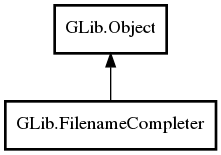

GLib.FilenameCompleter Reference Manual
Packages
gio-2.0
GLib
FilenameCompleter
FilenameCompleter
get_completion_suffix
get_completions
set_dirs_only
got_completion_data
FilenameCompleter
Object Hierarchy:

Description:
public
class
FilenameCompleter
:
Object
Namespace:
GLib
Package:
gio-2.0
Content:
Creation methods:
public
FilenameCompleter
()
Methods:
public
string
get_completion_suffix
(
string
initial_text)
public
string
[]
get_completions
(
string
initial_text)
public
void
set_dirs_only
(
bool
dirs_only)
Signals:
public
virtual
signal
void
got_completion_data
()